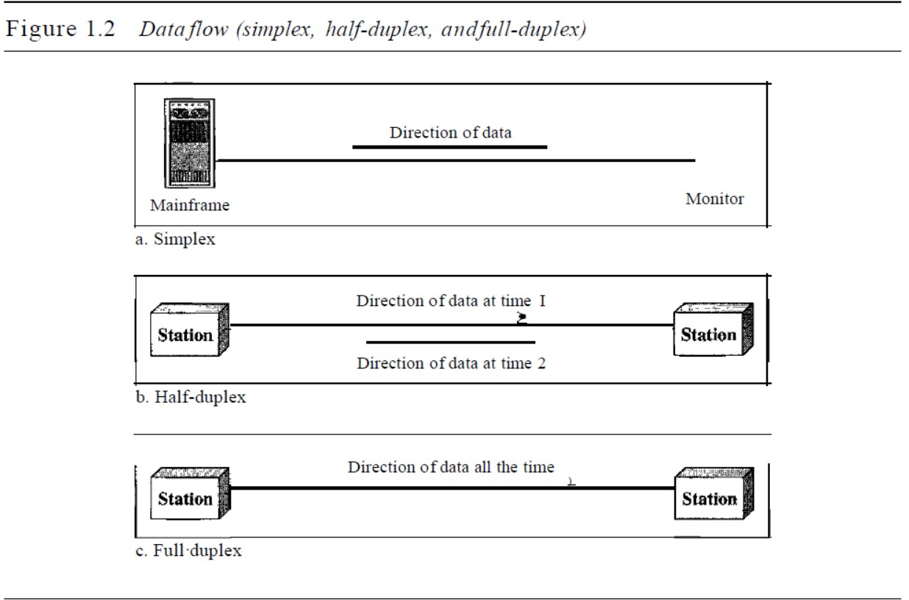

1.1 DATA COMMUNICATIONS
When we communicate, we are sharing information. This sharing can be local or
remote. Between individuals, local communication usually occurs face to face, while
remote communication takes place over distance. The term telecommunication, which includes telephony,
telegraphy, and television, means communication at a distance (tele
is Greek for "far").
The word data refers to information presented in whatever form is agreed upon by
the parties creating and using the data.
Data communications are the exchange of data between two devices via some
form of transmission medium such as a wire cable. For data communications to occur,
the communicating devices must be part of a communication system made up of a combination
of hardware (physical equipment) and software (programs)
The effectiveness of a data communications system depends on four fundamental characteristics: delivery,
accuracy, timeliness, and jitter.
1. Delivery. The system must deliver data to the correct destination. Data must be
received by the intended device or user and only by that device or user.
2. Accuracy. The system must deliver the data accurately. Data that have been
altered in transmission and left uncorrected are unusable.
3. Timeliness. The system must deliver data in a timely manner. Data delivered late are
useless. In the case of video and audio, timely delivery means delivering data as
they are produced, in the same order that they are produced, and without significant
delay. This kind of delivery is called real-time transmission.
4. Jitter. Jitter refers to the variation in the packet arrival time. It is the uneven delay in
the delivery of audio or video packets. For example, let us assume that video packets
are sent every 3D ms. If some of the packets arrive with 3D-ms delay and others with
4D-ms delay, an uneven quality in the video is the result.
COMPONENTS
A data communications system has five components (see Figure 1.1).
1. Message. The message is the information (data) to be communicated. Popular
forms of information include text, numbers, pictures, audio, and video.
2. Sender. The sender is the device that sends the data message. It can be a computer,
workstation, telephone handset, video camera, and so on.
3. Receiver. The receiver is the device that receives the message. It can be a computer,
workstation, telephone handset, television, and so on.
4. Transmission medium. The transmission medium is the physical path by which
a message travels from sender to receiver. Some examples of transmission media
include twisted-pair wire, coaxial cable, fiber-optic cable, and radio waves.
5. Protocol. A protocol is a set of rules that govern data communications. It represents
an agreement between the communicating devices. Without a protocol, two
devices may be connected but not communicating, just as a person speaking French
cannot be understood by a person who speaks only Japanese.
DATA REPRESENTATION
Information today comes in different forms such as text, numbers, images, audio, and video.
Text In data communications, text is represented as a bit pattern, a sequence
of bits (Os or
Is). Different sets of bit patterns have been designed to represent text symbols. Each set
is called a code, and the process of representing symbols is called coding. Today, the
prevalent coding system is called Unicode, which uses 32 bits to represent a symbol or
character used in any language in the world. The American Standard Code for Information
Interchange (ASCII), developed some decades ago in the United States, now
constitutes the first 127 characters in Unicode and is also referred to as Basic Latin.
Appendix A includes part of the Unicode.
Numbers
Numbers are also represented by bit patterns. However, a code such as ASCII is not used
to represent numbers; the number is directly converted to a binary number to simplify
mathematical operations. Appendix B discusses several different numbering systems.
Images
Images are also represented by bit patterns. In its simplest form, an image is composed
of a matrix of pixels (picture elements), where each pixel is a small dot. The size of the
pixel depends on the resolution. For example, an image can be divided into 1000 pixels
or 10,000 pixels. In the second case, there is a better representation of the image (better
resolution), but more memory is needed to store the image.
After an image is divided into pixels, each pixel is assigned a bit pattern. The size
and the value of the pattern depend on the image. For an image made of only blackand-
white dots (e.g., a chessboard), a I-bit pattern is enough to represent a pixel.
If an image is not made of pure white and pure black pixels, you can increase the
size of the bit pattern to include gray scale. For example, to show four levels of gray
scale, you can use 2-bit patterns. A black pixel can be represented by 00, a dark gray
pixel by 01, a light gray pixel by 10, and a white pixel by 11.
There are several methods to represent color images. One method is called RGB,
so called because each color is made of a combination of three primary colors: red,
green, and blue. The intensity of each color is measured, and a bit pattern is assigned to
it. Another method is called YCM, in which a color is made of a combination of three
other primary colors: yellow, cyan, and magenta.
Audio
Audio refers to the recording or broadcasting of sound or music. Audio is by nature
different from text, numbers, or images. It is continuous, not discrete. Even when we use a
microphone to change voice or music to an electric signal, we create a continuous
signal. In Chapters 4 and 5, we learn how to change sound or music to a digital or an
analog signal.
Video Video refers to the recording or broadcasting of a picture or movie.
Video can either be
produced as a continuous entity (e.g., by a TV camera), or it can be a combination of
images, each a discrete entity, arranged to convey the idea of motion. Again we can
change video to a digital or an analog signal.
DATA FLOW
Communication between two devices can be simplex, half-duplex, or full-duplex.

Simplex
In simplex mode, the communication is unidirectional, as on a one-way street. Only one
of the two devices on a link can transmit; the other can only receive (see Figure 1.2a).
Keyboards and traditional monitors are examples of simplex devices. The keyboard
can only introduce input; the monitor can only accept output. The simplex mode
can use the entire capacity of the channel to send data in one direction.
Half-Duplex
In half-duplex mode, each station can both transmit and receive, but not at the same time. :
When one device is sending, the other can only receive, and vice versa (see Figure 1.2b).
The half-duplex mode is like a one-lane road with traffic allowed in both directions.
When cars are traveling in one direction, cars going the other way must wait. In a
half-duplex transmission, the entire capacity of a channel is taken over by whichever of
the two devices is transmitting at the time. Walkie-talkies and CB (citizens band) radios
are both half-duplex systems.
The half-duplex mode is used in cases where there is no need for communication
in both directions at the same time; the entire capacity of the channel can be utilized for
each direction.
Full-Duplex
In full-duplex mode (also called duplex), both stations can transmit and receive simultaneously
(see Figure 1.2c).
The full-duplex mode is like a one-lane street with traffic flowing in both directions
at the same time. In full-duplex mode, signals going in one direction share the
capacity of the link: with signals going in the other direction. This sharing can occur in
two ways: Either the link must contain two physically separate transmission paths, one
for sending and the other for receiving; or the capacity of the channel is divided
between signals traveling in both directions.
One common example of full-duplex communication is the telephone network.
When two people are communicating by a telephone line, both can talk and listen at the
same time.
The full-duplex mode is used when communication in both directions is required
all the time. The capacity of the channel, however, must be divided between the two
directions.
1.2 NETWORKS
A network is a set of devices (often referred to as nodes) connected by communication links. A node can be a computer, printer, or any other device capable of sending and/or receiving data generated by other nodes on the network.
DISTRIBUTED PROCESSING
Most networks use distributed processing, in which a task is divided among multiple computers. Instead of one single large machine being responsible for all aspects of a process, separate computers (usually a personal computer or workstation) handle a subset.NETWORK CRITERIA
A network must be able to meet a certain number of criteria. The most important of these are performance, reliability, and security.-
PERFORMANCE
Performance can be measured in many ways, including transit time and response time. Transit time is the amount of time required for a message to travel from one device to another. Response time is the elapsed time between an inquiry and a response. The performance of a network depends on a number of factors, including the number of users, the type of transmission medium, the capabilities of the connected hardware, and the efficiency of the software.
Performance is often evaluated by two networking metrics: throughput and delay. We often need more throughput and less delay. However, these two criteria are often contradictory. If we try to send more data to the network, we may increase throughput but we increase the delay because of traffic congestion in the network -
RELIABILITY
In addition to accuracy of delivery, network reliability is measured by the frequency of failure, the time it takes a link to recover from a failure, and the network's robustness in a catastrophe. -
SECURITY
Network security issues include protecting data from unauthorized access, protecting data from damage and development, and implementing policies and procedures for recovery from breaches and data losses.
Types Of Connection
A network is two or more devices connected through links. A link is a communications pathway that transfers data from one device to another. For visualization purposes, it is simplest to imagine any link as a line drawn between two points. For communication to occur, two devices must be connected in some way to the same link at the same time. There are two possible types of connections: point-to-point and multipoint.
-
Point-to-Point
A point-to-point connection provides a dedicated link between two devices. The entire capacity of the link is reserved for transmission between those two devices. Most point-to-point connections use an actual length of wire or cable to connect the two ends, but other options, such as microwave or satellite links, are also possible (see Figure 1.3a). When you change television channels by infrared remote control, you are establishing a point-to-point connection between the remote control and the television's control system. -
Multipoint
A multipoint (also called multidrop) connection is one in which more than two specific devices share a single link (see Figure 1.3b). In a multipoint environment, the capacity of the channel is shared, either spatially or temporally. If several devices can use the link simultaneously, it is a spatially shared connection. If users must take turns, it is a timeshared connection.
PHYSICAL TOPOLOGY
The term physical topology refers to the way in which a network is laid out physically.:
two or more devices connect to a link; two or more links form a topology. The topology
of a network is the geometric representation of the relationship of all the links and
linking devices (usually called nodes) to one another. There are four basic topologies
possible: mesh, star, bus, and ring (see Figure 1.4).
Mesh In a mesh topology, every device has a dedicated point-to-point link to every
other device. The term dedicated means that the link carries traffic only between the
two devices it connects. To find the number of physical links in a fully connected mesh
network with n nodes, we first consider that each node must be connected to every
other node. Node 1 must be connected to n - I nodes, node 2 must be connected to n - 1
nodes, and finally node n must be connected to n - 1 nodes. We need n(n - 1) physical
links. However, if each physical link allows communication in both directions (duplex
mode), we can divide the number of links by 2. In other words, we can say that in a
mesh topology, we need